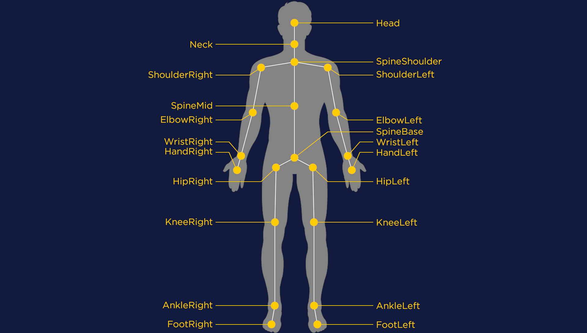
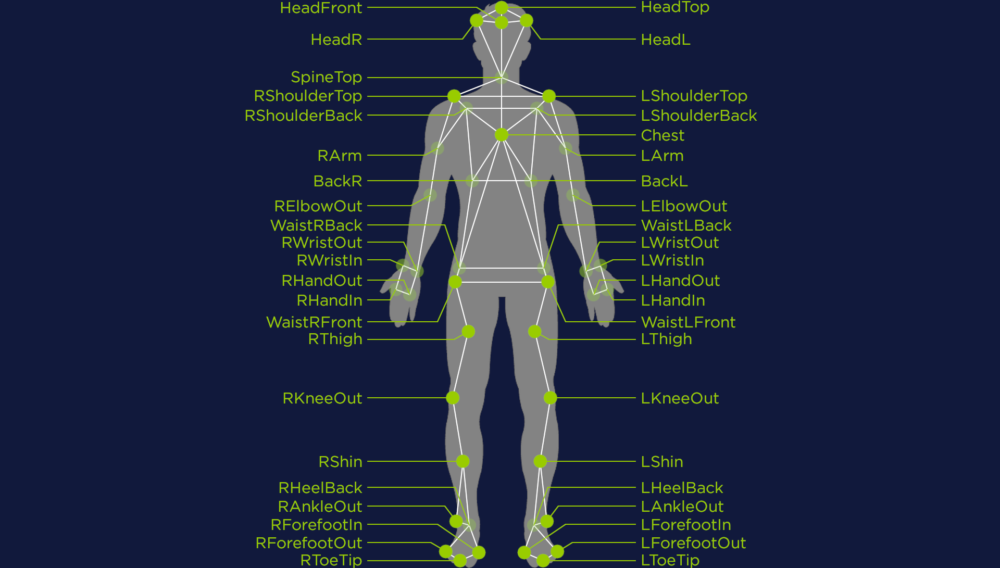
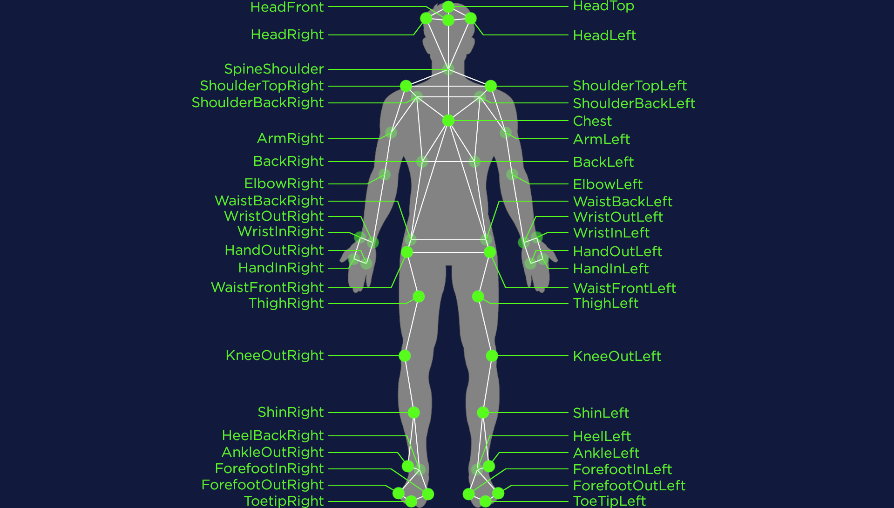

Joint labels
Kinect joint labels
The Kinect v2 system tracks a skeleton using the following 21 joints:
Qualisys and Kualisys joint labels
The standard setup for the Qualisys system uses 44 joint labels. Joints with transparency are located in the back of the subject:
Due to the inconsistency in naming of the joints (e.g. “BackL” and “LArm”), the joints are automatically renamed in Krajjat to follow a more consistent approach, based on the Kinect labelling. The toolbox names these Kualisys joint labels :
Qualisys to Kinect conversion
In order to compare Kinect and Qualisys recordings, an (arbitrary) conversion system based on joint averaging has been defined. In the following table, joints with an asterisk are joints obtained by averaging Qualisys joints: they are calculated first before being used to create other joints via averaging.
Kinect joint |
Averaged joints |
|||
|---|---|---|---|---|
Head |
HeadTop |
HeadFront |
HeadLeft |
HeadRight |
Neck |
Head* |
SpineShoulder |
||
SpineShoulder |
SpineShoulder |
|||
ShoulderLeft |
ShoulderTopLeft |
ShoulderBackLeft |
||
ShoulderRight |
ShoulderTopRight |
ShoulderBackRight |
||
SpineMid |
Chest |
BackLeft |
BackRight |
|
ElbowLeft |
ElbowLeft |
|||
ElbowRight |
ElbowRight |
|||
WristLeft |
WristOutLeft |
WristInLeft |
||
WristRight |
WristOutRight |
WristInRight |
||
HandLeft |
HandOutLeft |
HandInLeft |
||
HandRight |
HandOutRight |
HandInRight |
||
HipLeft |
WaistBackLeft |
WaistFrontLeft |
||
HipRight |
WaistBackRight |
WaistFrontRight |
||
SpineBase |
HipLeft* |
HipRight* |
||
KneeLeft |
KneeLeft |
|||
KneeRight |
KneeRight |
|||
AnkleLeft |
AnkleLeft |
|||
AnkleRight |
AnkleRight |
|||
FootLeft |
ForefootOutLeft |
ForefootInLeft |
ToetipLeft |
HeelLeft |
FootRight |
ForefootOutRight |
ForefootInRight |
ToetipRight |
HeelRight |
Display the sequence
It is possible to display sequences using the functions in doc:graphic_functions. These functions
allow to show the skeleton with or without the joints below the waist (parameter ignore_bottom in most
functions).
In the case of Kinect recordings, the joints ignored below the waist would be HipRight, HipLeft,
KneeRight, KneeLeft, AnkleRight, AnkleLeft, FootRight and FootLeft.
In the case of Kualisys recordings, the joints ignored below the waist are ThighRight, ThighLeft,
ShinRight, ShinLeft, HeelRight, HeelLeft, AnkleRight, AnkleLeft, ForefootInRight,
ForefootInLeft, ForefootOutRight, ForefootOutLeft, ToetipRight and ToetipLeft.